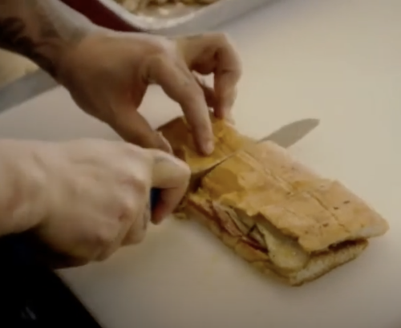

Cubanos

Description
It's a spin on ham and cheese sandwiches which adds roasted pork, pickles, and mustard. The film Chef (2014) features them prominently as the main dish made by Jon Favreau's character from a food truck.
Ingredients
- 2 thin slices baked leg ham
- 4 large, thin slices Mojo Marinated Pork
- 2 pieces of white baguettes , 6 inch/15 cm in length, cut in half
- Melted butter, for brushing
- American mustard
- 2 thin slices Swiss cheese
- 2 or 3 dill pickles, thinly sliced
Steps
- Heat skillet over medium heat. Add ham and pork slices, and cook each side until slightly browned then remove to a plate.
- Butter cut sides of baguettes then place in the skillet, cut side down, for 2 minutes until lightly browned. Remove onto work surface.
- Layer the bottom of the baguettes with pork, ham, then cheese and pickles. Cut, break or fold the ham, pork and cheese so they fit. Spread the cut side of the bun tops with mustard then place on the sandwich.
- Butter the bottom AND top of the outside of the baguettes.
- Heat skillet over medium high heat. Place the baguettes in the skillet, top with a sheet of baking paper then weigh it down with a heavy skillet or pot (use cans if necessary for extra weight so the sandwich compressed). Cook for 3 minutes on each side, until dark golden brown and crispy, and the cheese is melted.
- Let sandwiches stand 1 minute before cutting in half. Serve IMMEDIATELY.